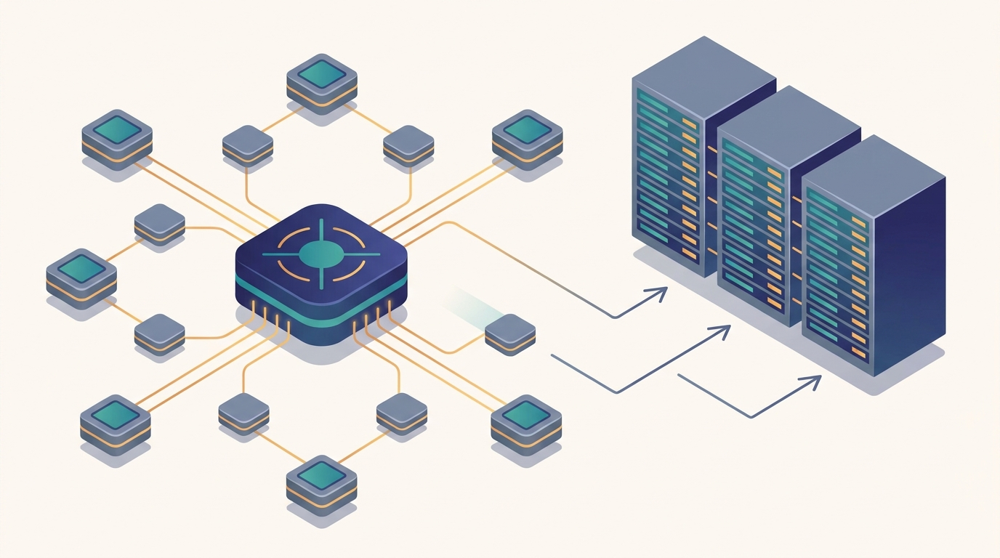

"I hold the only true copy of the weights. Forty workers push me gradients I have not finished applying, pull values I have not finished updating, and somehow we all agree this counts as training."
A Parameter Server Under Mild Staleness
Chapter 10 assumed every worker could hold a full copy of the model and only the gradients needed combining; this chapter removes that assumption and asks what architecture you need when the parameters themselves are too large for one machine, and the answer is to give the parameters a home of their own. A parameter server is a set of dedicated machines that store the model's parameters, while a separate set of worker machines computes gradients on shards of the data; workers push their gradients to the servers, the servers apply the update, and the workers pull the fresh parameters back before the next step. That push-pull loop is the second great pattern of distributed learning, the counterpart to the all-reduce of Chapter 10, and this chapter builds it from the motivation up. It opens with why the pattern exists at all: models whose parameter vector is too large to replicate, or so sparse that any one step touches only a handful of coordinates, both of which break the every-worker-holds-everything premise of data-parallel all-reduce. From there it constructs the architecture: the push-pull protocol that defines the interface, the choice between a single centralized server and many sharded servers that split the parameter space by key, and the consistency dial that runs from fully synchronous through fully asynchronous. The middle of that dial, bounded staleness, gets its own treatment as the principled compromise that keeps asynchrony's throughput while capping the damage stale reads can do. The chapter then turns to the application that made parameter servers indispensable: sparse models and the distributed embedding tables that map billions of categorical features into dense vectors, scaled in the next section to the terabyte regime of industrial recommendation. It closes with the practical questions any stateful-server design must answer, fault tolerance when the machine holding your parameters fails, and the honest modern comparison of when parameter servers still win and when all-reduce has displaced them. The asynchronous SGD and stale-gradient bounds of Chapter 10 return here as the consistency model of the server, and the all-reduce you learned to love returns as its principal rival.
Chapter Overview
This is the second chapter of Part III, and it answers a question Chapter 10 deliberately left open. Distributed optimization showed how to split a gradient across workers and sum it back with an all-reduce, but it assumed the model was small enough that every worker kept a full copy and only the gradients had to travel. This chapter takes the case where that assumption fails: the parameter vector is too large to replicate, or so sparse that replicating it would waste almost all of the bandwidth. The architectural answer is the parameter server, a dedicated tier that owns the parameters while the workers own the compute, and the chapter develops that answer, its protocol, its sharding, its consistency models, and the embedding tables that are its signature application.
The chapter unfolds in three movements. The first builds the architecture itself. It starts from the motivation, the large and sparse models that all-reduce serves poorly, then defines the push-pull interface that every parameter server speaks, then splits the single logical server into a centralized design and a sharded design that partitions the parameter keys across many server machines so that no one machine is the bottleneck. The second movement is about consistency, the central design axis of the whole architecture. Synchronous updates keep every worker in lockstep and reproduce single-machine semantics at the cost of waiting on the slowest worker; asynchronous updates let workers push and pull whenever they are ready and accept that the parameters a worker reads may be stale. Bounded staleness sits between them, capping how many steps any worker may run ahead of the slowest so that asynchrony's speed is kept while its staleness is contained. The third movement spends the architecture on the application that defines it: sparse models and distributed embedding tables, where most parameters are categorical-feature embeddings that each step touches only sparsely, then the terabyte-scale embeddings of production recommendation systems that no single machine could ever hold. The chapter ends on the engineering reality, fault tolerance for the stateful server tier and a clear-eyed account of parameter servers versus all-reduce in modern systems.
Read in order, the nine sections take you from "the model does not fit on one machine" to a working command of the architecture that solves it: how parameters are housed, sharded, and kept consistent, how sparse embeddings make terabyte-scale models trainable, and how the parameter server and the all-reduce divide the modern landscape between them. This is the structural complement to the optimization of Chapter 10, and the foundation on which the sharded-parameter methods of Part IV, ZeRO and FSDP among them, are built.
Prerequisites
This chapter builds directly on the distributed optimization that opened Part III. From Chapter 10: Distributed Optimization you carry the synchronous and asynchronous distributed SGD patterns, the gradient staleness that asynchrony introduces, and the staleness-bounded convergence analysis; the consistency models of Sections 11.4 and 11.5 are exactly those ideas turned into the read-and-write semantics of a stateful server, and the all-reduce baseline of Chapter 10 is the rival that Section 11.9 weighs the parameter server against. From Chapter 4: Communication Primitives for Distributed Training you carry the point-to-point and collective operations that the push and the pull are built from, and the bandwidth and latency intuition that tells you when a sharded server tier outperforms a single centralized one. The chapter assumes comfortable Python and the PyTorch-style training loop, single-machine gradient descent, and the idea of an embedding lookup as a table indexed by a categorical key; it uses the consistency vocabulary of distributed systems lightly, and the optimization and linear-algebra background it leans on is refreshed in Appendix A: Mathematical Background.
Learning Objectives
- Explain why large and sparse models break the every-worker-holds-everything premise of all-reduce, and motivate the parameter server as the architecture that houses parameters separately from compute.
- Describe the push-pull protocol, stating exactly what a worker sends when it pushes a gradient and receives when it pulls parameters, and trace one training step through it.
- Contrast a centralized parameter server with a sharded one, explain how partitioning parameter keys across servers removes the central bottleneck, and reason about load balance across shards.
- Compare synchronous and asynchronous parameter-server updates, relate them to the synchronous and asynchronous SGD of Chapter 10, and identify the throughput-versus-consistency trade each makes.
- Define bounded staleness, explain how a staleness bound caps the gap between the fastest and slowest worker, and argue why it keeps asynchrony's speed while containing its error.
- Explain why recommendation and other sparse models are dominated by embedding tables, and describe how those tables are sharded across servers into a terabyte-scale distributed structure.
- Distinguish table-wise, row-wise, column-wise, and grid sharding for modern embedding tables, and explain why 2D sparse parallelism combines model-parallel shards inside a group with data-parallel replicas across groups.
- Reason about fault tolerance for the stateful server tier, and weigh parameter servers against all-reduce to decide which architecture a given modern workload calls for.
If you keep one thing from this chapter, keep this: a parameter server moves the model off the workers and onto dedicated machines that workers push gradients to and pull fresh parameters from, which is the architecture you reach for when the model is too large to replicate or too sparse to replicate efficiently, and the whole craft is choosing how to shard the parameters across servers and how much staleness to tolerate between a worker's pull and its push. Read forward, the sections build the idea in layers: first the motivation and the push-pull protocol that define the architecture, then the centralized-versus-sharded and synchronous-versus-asynchronous choices that configure it, then bounded staleness as the principled middle of the consistency dial, then the sparse models and terabyte embedding tables that are its defining application, and finally fault tolerance and the honest comparison with all-reduce. Read as a question, the chapter asks of any large-model training run: where do the parameters live, how are they split across servers, and how fresh must a worker's view of them be, and that question carries straight into the sharded-parameter training of Part IV. The roadmap below walks the nine sections that build that habit of mind.
Chapter Roadmap
- 11.1 Motivation for Parameter Servers Opens with the models that all-reduce serves poorly, those too large to replicate or so sparse that replication wastes bandwidth, and motivates housing the parameters on machines of their own.
- 11.2 Push-Pull Architecture Defines the interface every parameter server speaks: workers push gradients up to the servers and pull fresh parameters back down, and one training step is a trip around that loop.
- 11.3 Centralized and Sharded Parameter Servers Splits the single logical server into a centralized design and a sharded one that partitions the parameter keys across many machines so that no single server becomes the bottleneck.
- 11.4 Synchronous and Asynchronous Updates Sets the central consistency axis: synchronous updates keep workers in lockstep at the cost of the straggler, while asynchronous updates trade exact agreement for the throughput of never waiting.
- 11.5 Bounded Staleness Builds the principled middle of the dial, capping how far any worker may run ahead of the slowest so that asynchrony keeps its speed while the error from stale reads stays bounded.
- 11.6 Sparse Models and Distributed Embedding Tables Spends the architecture on its defining application, the categorical-feature embeddings that each step touches only sparsely, and shows how those tables are sharded across servers.
- 11.7 Terabyte-Scale Embeddings Scales the embedding table to the regime of industrial recommendation, where the parameters no single machine could hold are partitioned with table-wise, row-wise, column-wise, and grid sharding across a fleet and accessed sparsely per batch.
- 11.8 Fault Tolerance in Parameter Servers Confronts the hard part of a stateful tier: what happens when the machine holding your parameters fails, and how replication and checkpointing keep the training run alive across it.
- 11.9 Parameter Servers vs All-Reduce in Modern Systems Closes with the honest comparison, weighing the parameter server against the all-reduce of Chapter 10 to say which architecture a given modern workload actually calls for.
Read the nine sections in order and you will hold a working command of the architecture that trains a model too large to replicate: Section 11.1 motivates housing parameters separately and Section 11.2 defines the push-pull loop that does it, Section 11.3 shards the servers and Sections 11.4 and 11.5 set the consistency dial from synchronous through bounded-stale to asynchronous, Sections 11.6 and 11.7 spend it on sparse embeddings up to the terabyte scale, and Sections 11.8 and 11.9 close on fault tolerance and the comparison with all-reduce. The thread to watch is the staleness of Chapter 10 becoming the consistency model of the server, and the parameter sharding you build here returning as the ZeRO and FSDP sharding of Chapter 16.
What's Next?
This chapter built the architecture for models too large or too sparse to replicate, the parameter server and its push-pull loop, its sharded layout, its consistency dial, and the embedding tables that are its signature. Chapter 12: Distributed Classical Machine Learning turns from the architecture back to the algorithms, asking how the workhorses of practical machine learning, linear and logistic regression, support vector machines, decision trees and the gradient-boosted ensembles built on them, clustering, and approximate nearest-neighbor search, are made to run across a cluster. Many of those methods sit naturally on the data-parallel and parameter-server patterns you have now seen twice, and several, the boosted trees above all, drove the distributed systems that this chapter and the last one describe. Read it next, and watch the optimization and the architecture of these two chapters become the engine under a whole family of classical learners.
Bibliography & Further Reading
Foundational Papers
Li, M., Andersen, D. G., Park, J. W., Smola, A. J., Ahmed, A., Josifovski, V., et al. "Scaling Distributed Machine Learning with the Parameter Server." OSDI, 2014. usenix.org
The paper that named and formalized the parameter server, defining the push-pull interface, key sharding, and flexible consistency models that frame this entire chapter.
Dean, J., Corrado, G., Monga, R., Chen, K., Devin, M., Le, Q. V., et al. "Large Scale Distributed Deep Networks." NeurIPS, 2012. papers.nips.cc
The DistBelief paper whose Downpour SGD ran asynchronous workers against a sharded parameter store, the system that established the architecture this chapter builds.
Ho, Q., Cipar, J., Cui, H., Lee, S., Kim, J. K., Gibbons, P. B., et al. "More Effective Distributed ML via a Stale Synchronous Parallel Parameter Server." NeurIPS, 2013. papers.nips.cc
The stale synchronous parallel model that bounds how far any worker may run ahead, the theoretical foundation for the bounded staleness of Section 11.5.
Recht, B., Re, C., Wright, S., Niu, F. "Hogwild!: A Lock-Free Approach to Parallelizing Stochastic Gradient Descent." NeurIPS, 2011. arxiv.org/abs/1106.5730
The lock-free asynchronous scheme that proved coordination is unnecessary when updates are sparse, the argument that makes asynchronous embedding updates of Sections 11.4 and 11.6 work.
Distributed Embeddings and Recommendation
Naumov, M., Mudigere, D., Shi, H. M., Huang, J., Sundaraman, N., Park, J., et al. "Deep Learning Recommendation Model for Personalization and Recommendation Systems (DLRM)." arXiv:1906.00091, 2019. arxiv.org/abs/1906.00091
The reference recommendation model whose enormous embedding tables and sparse lookups define the terabyte-scale embedding problem of Sections 11.6 and 11.7.
Mudigere, D., Hao, Y., Huang, J., Jia, Z., Tulloch, A., Sridharan, S., et al. "Software-Hardware Co-design for Fast and Scalable Training of Deep Learning Recommendation Models (Neo)." arXiv:2104.05158, 2021. arxiv.org/abs/2104.05158
The Neo system describing how production-scale embedding tables are sharded and trained across a hardware fleet, a concrete realization of the architecture in Section 11.7.
Acun, B., Murphy, M., Wang, X., Nie, J., Wu, C.-J., Hazelwood, K. "Understanding Training Efficiency of Deep Learning Recommendation Models at Scale." arXiv:2011.05497, 2020. arxiv.org/abs/2011.05497
A measurement study of where time and bandwidth go when training large recommendation models, grounding the load-balance and bottleneck reasoning of Sections 11.3 and 11.7.
Tools & Libraries
PyTorch. "Scaling Recommendation Systems Training to Thousands of GPUs with 2D Sparse Parallelism." 2025. pytorch.org
Describes the modern 2D sparse-parallel layout for recommender training: model-parallel embedding sharding within a group and data-parallel replicas across groups, the frontier update added to Section 11.7.
TorchRec: PyTorch Domain Library for Recommendation Systems. PyTorch Documentation. docs.pytorch.org/torchrec
PyTorch's library for sharded embedding tables and model-parallel recommendation training, the production tooling behind the distributed embeddings of Sections 11.6 and 11.7.
NVIDIA Merlin and HugeCTR: GPU-Accelerated Recommender Framework. NVIDIA Developer Documentation. developer.nvidia.com/merlin
NVIDIA's framework for training recommenders with GPU-resident and distributed embedding tables, illustrating the hardware side of terabyte-scale embeddings in Section 11.7.
Jiang, B., Deng, C., Yi, H., Hu, Z., Zhou, G., Zheng, Y., et al. "XDL: An Industrial Deep Learning Framework for High-Dimensional Sparse Data." DLP-KDD, 2019. dl.acm.org
An industrial framework built on a parameter-server backbone for high-dimensional sparse models, a working example of the fault-tolerant sharded design of Sections 11.3 and 11.8.